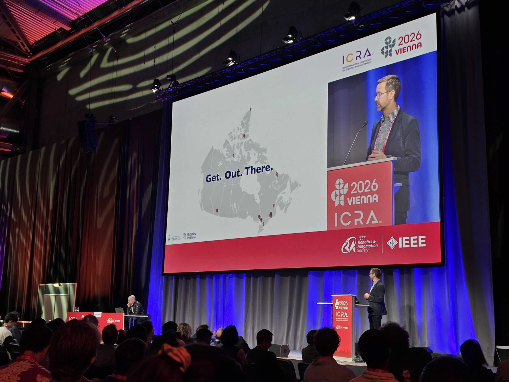

로봇공학도로서 학위과정동안 남겨야 할 것은 무엇일까?

로봇공학도로서 학위과정동안 남겨야 할 것은 무엇일까? 비디오이다 구체적으로는 어떤 종류의 비디오? 실패했던 기록들 그리고 동료와 함께 실험하는 모습들 요즘 지능과 논리는 거의 무료가 되고 있다 Gpt 에 예를 들어서 내가 이 주제에 대해서 이 정도의 모티베이션을 가지고 있는데 이거를 상위 머신러닝 학회에 낼 수 있게 3가지 logical pillar 를 만들어 주고 sub challegne 들을 3개 만들어 줘 라고 하면 정말로 intro 가 그럴듯하게 나온다 그리고 그걸 극복하기 위해서 30k 의 샘플을 시뮬레이션에서 모으고 결과적으로 k % 의 향상을 이끌었다고 한다 그런데 논리적으로는 맞는데 마음이 움직이지 않는 논문들이 있다 진짜 그런가? 진짜 그 3가지 논리로 분해가 가능한가? 문제를 ‘관찰’해서 바텀업으로 ‘발견’하는게 아니라 탑다운으로 ‘예측’ 해서 ‘분해’하는 연구들만 많아지고 있는 듯하다 영혼이 평준화되고 있다. 피터틸은 경쟁하지 말고 작은 것부터 독점하라고 했는데 본인의 내면과 영혼 조차 독점하지 못한다면? 박사는 왜 ‘철학’ 박사라 불리는가. 아무튼 실험과정에서의 실패로부터 연구를 시작하는 경험들이 메말라가고 있는 듯하다 박사과정은 다음 커리어를 위한 사다리 그 어딘가에 위치하기도 하지만 박사과정 이 아니면 인생에서 할 수 없는 경험을 한다는 면에서 그러한 가치는 있다 (물론 모두에게 그게 필요한 건 아니지만) 이왕 박사를 하기로 했다면 어떤 경험이 가장 가치 있을지 스스로 깊게 물어보는 일이 꼭 필요할것이다 그러라고 시간이 4년씩 주어지는 것이고 로봇공학은 그런면에서 본질적 및 시스템적으로 그걸 경계하고 피할 수 있는 재미있는 학문이다 어쨌든 시뮬레이션 속에서 논리가 맞는게 증명하는 학문이 아니라 실제로 로봇이 잘 움직이는가? 를 결국 보여주어야 하기 때문이다 분야마다 다르겠지만 .. 매크로로봇+로봇AI 분야에서는 논문 개수를 중요하게 여긴다고 생각하지는 않는다 (물론 교수나 연구원이 향후 진로 계획이라면.. 최소한의 논문생산력 증명과 유기적으로 스토리가 있는 연구를 할 수 있음을 보이기 위해 5개 정도는 요구되는 듯하다) 그래서 한번 성취한 수준을 관성적으로 반복 성취하는 것을 경계해야 한다 그러한 시스템을 만들어야 한다 지금 이 글을 읽고 있는 누군가에게는 ICRA 논문 하나 더 가 필요한 게 아닐 것이다 졸업 후 몇 년이 흐른채 가장 자랑스러운 것은 구글 스콜라 1저자 논문 옆에 찍힌 몇 백의 숫자보다도 박사과정때 찍어둔 동료들과 실험하는 사진들이다 그리고 그걸 논문 figure 에 넣어 박제해두니 얼마나 기쁘고 자랑스러운 일일까! 바풋 교수님 말대로 get out 해서 진짜 문제를 발견해야 한다. ‘자기만’의 문제를 ‘최초’로 소유해야 한다. 그리고 그 과정에서 서로 지지하고 실험을 체력적/심리적 으로 도와줄 수 있는 동료들을 모아라 그런 팀을 만들어야 한다. 서로의 실험을 체력적으로 밀어주고 연구의 방향을 기술적으로 검증해주고 실패한 기록을 다음 문제 정의로 바꿀 수 있는 팀. 그런 팀 안에서만 발견되는 문제가 있다 그리고 그런 문제 중 일부가, 시간이 지나 자기만의 연구가 된다 박사과정 동안 남겨야 할 것은 결국 그런 것이다 잘 정리된 논리만이 아니라 실패의 기록 멋진 최종 데모만이 아니라 그 데모가 가능해지기까지의 어설픈 영상들 혼자 쌓은 업적만이 아니라 동료들과 함께 몸으로 통과한 실험의 시간들 이런것들 없이 physical AI 를 논한다면 졸업 하고나서도 job을 구하긴 쉽지 않을 것이다 로봇공학자로서 학위과정 동안 남겨야 할 것은 무엇일까? 그래서 나는 비디오라고 생각한다. 실패했던 기록들. 그리고 동료와 함께 실험하는 모습들. “Get. Out. There.”